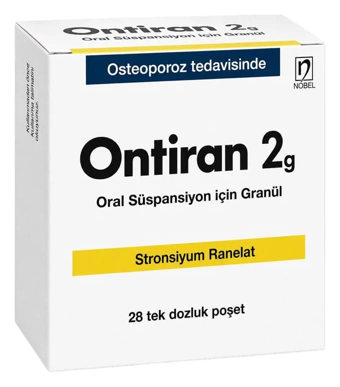

Ontiran 2 g Oral Süspansiyon İçin Granül 28 Poşet

Ne için kullanılır
KT · Bölüm 1• ONTİRAN kemik hastalıklarını tedavi eden ilaç grubuna aittir. Kemik yıkımını azaltarak kemik oluşumunu hareketlendirir, böylece kırık riskini azaltır. Yeni oluşan kemik normal kalitededir. • ONTIRAN oral süspansiyon için açık san granüller içeren tek dozluk poşetlerde bulunmaktadır. Kutular
adet tek dozluk poşet içermektedir. • ONTİRAN kemik erimesi tedavisi içindiğer ilaçlan kullanamayan yüksek kırık riski bulunan - menopoz sonrasındaki kadın hastalarda ve - yetişkin erkek hastalarda ciddi kemik erimesinin tedavisinde kullamlır. ONTIRAN, menopoz sonrası evrede bulunan kadın hastalarda omurga ve kalça kınkları riskini azaltmaktadır. 1/8
Kemik erimesi hakkında: Vücudunuz devamlı olarak eski kemik dokularını tüketip yerine yeni dokular üretmektedir. Eğer kemikerimesi hastalığımz varsavücudunuz ürettiğinden daha fazla kemik dokusu harcamaktadır. Böylece, yavaş yavaş kemik kaybıoluşur ve kemikleriniz daha ince ve kınigan olur. Bu durum özellikle kadınlarda menopoz sonrası görülmektedir. Kemik erimesi olan pek çok insan herhangi bir belirtihissetmemektedir ve durumdan haberdar değillerdir. Ancak, kemik erimesi olanhastalarda, özellikle omurga, kalça ve el bileğinde kemik kırılma olasılığı yüksektir. 2. ONTİRAN’ı